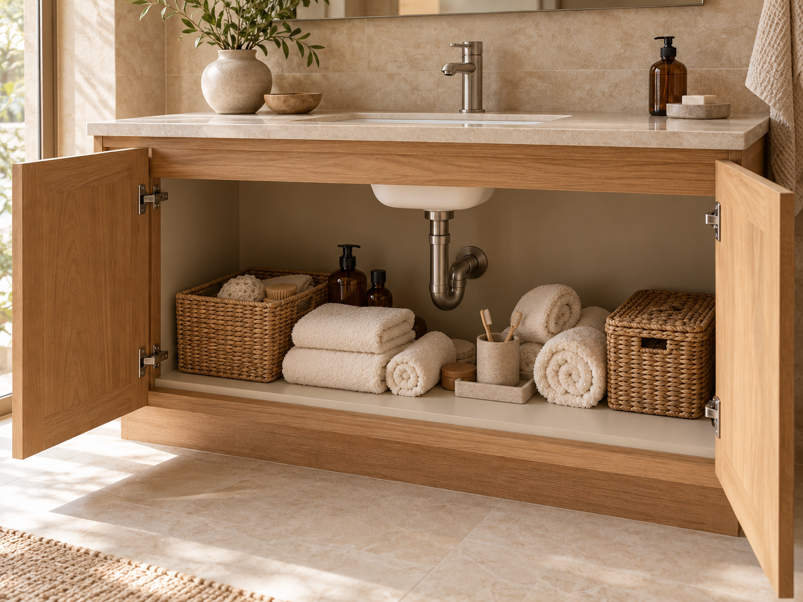
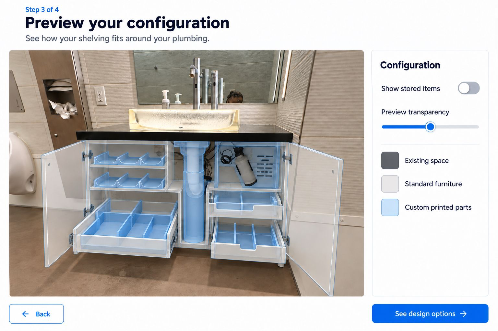

Under the sink, reimagined.
Make room around the pipes for your daily essentials.
A little less clutter. A lot more possibility.
Storage designed around your space.
Start with your photo. Mark what needs room. Explore a storage concept that responds to the awkward bits—beginning under the bathroom sink.
See the before & after

A fit that feels intentional
More use from every corner
A calmer kind of everyday
From overlooked to organized.
The pipes stay. The possibilities change.
See a new way to use the space beneath the sink.
Everyday supplies gather on the floor beneath exposed plumbing.
Shelves, drawers, and dividers make room around the pipes, giving supplies a place of their own.
The after image shows a proposed configuration. Select either image to view the full original.
Small spaces. Big possibilities.
A focused first step.
More spaces to explore in the future.
Make room around the pipes for your daily essentials.
Turn an awkward nook into a useful little moment.
A look at what’s possible. Designs shown are concepts; materials, final fit, pricing, and availability are still to be confirmed.
A little space for peace of mind.
You didn’t design your home around every bottle, basket, and belonging. And most shelves weren’t designed around your home.
SpaceMax starts with what’s already there. The tricky pipe. The narrow gap. The corner that never quite works. We see potential in those places—and a way to make everyday life feel a little lighter.
Thoughtfully fitted. Simply useful.A concept you can explore.
Bring a photo or use our sink example. Tell us what you want to store.
Enter dimensions, position the photo markers, and confirm what you’ve checked.
Adjust a plumbing boundary or shelf height and watch the storage sketch respond.
Compare open, concealed, and combination storage. Save a concept for further review.
THE PATH TO A REAL PRODUCT
Guided configuration → human fit review → a custom storage kit.
That’s the pilot we’re working toward. This studio explores the first step; fabrication and fit testing are still ahead.
Good to know
No. The example uses prepared sample values. For your own photo, you enter dimensions and mark the storage area and plumbing band manually. Moving a photo marker does not calculate real-world measurements.
The studio leaves a marked vertical plumbing band and reserved access space clear in a two-dimensional sketch. It does not verify actual pipe shape, depth, or every fixture. A reviewer must establish access and confirm an assembly method, such as split or removable panels, before fabrication.
Record the clear inside width, depth, and height—not the outside of the cabinet. Check the door opening and hinges, then note the location and size of pipes and other obstacles. The planner saves these notes in your design brief.
Our starting idea is to work with the space you have. Whether a particular design can be freestanding or needs fixing depends on your cabinet and the intended load, so installation details need to be confirmed for each solution.
This is an early look at SpaceMax. You can explore the concepts and create a personal space brief today. Purchases and quote submissions are not open yet; product specifications, prices, and fulfillment details will be confirmed before orders open.
Your saved concept and photo stay in this browser on this device. They aren’t sent to SpaceMax. Download a text brief to keep or share, or delete the saved browser copy from the studio.
Make more of the home you have.